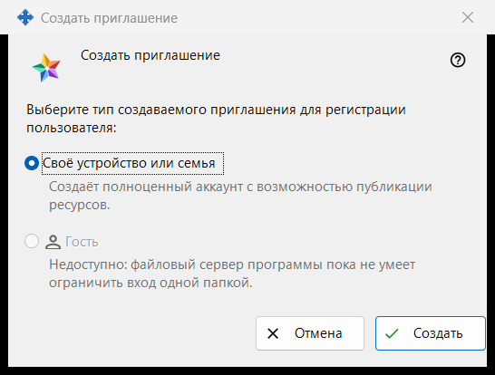
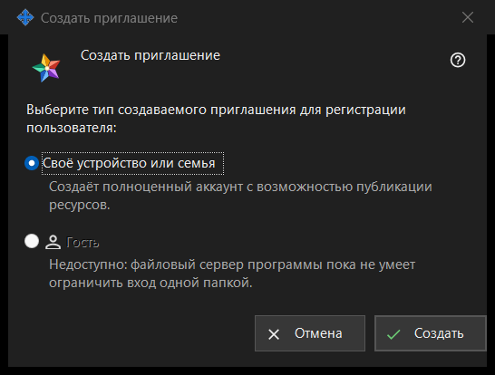

Создать приглашение
Назначение
В этом небольшом окне выбирается, какой аккаунт создаст новое приглашение. Окно открывается кнопкой «Создать приглашение..» в группе «Приглашения» настроек сервера обмена; группа показана, когда менеджер связался с сервером.


Порядок действий
- В настройках сервера обмена найдите группу «Приглашения» и нажмите «Создать приглашение..».
- Оставьте выбранным «Своё устройство или семья».
- Нажмите «Создать».
- Откроется окно «Приглашение создано» с кодом, который показывается один раз: скопируйте его там. «Отмена» или Esc закрывают окно, ничего не создавая.
Элементы окна
Тип приглашения
Вопрос «Выберите тип создаваемого приглашения для регистрации пользователя:» предлагает два переключателя. «Своё устройство или семья» выбран по умолчанию, под ним написано: «Создаёт полноценный аккаунт с возможностью публикации ресурсов.» Человек, который воспользуется приглашением, регистрирует собственный логин и пароль.
Создать
«Создать» запрашивает у сервера одноразовое приглашение. При успехе на странице настроек появляется строка «Приглашение успешно создано.» и открывается окно с кодом. Если сервер отказал, причина выводится на странице, а окно с кодом не открывается. В списке приглашения показаны типом, временем создания, состоянием и хешем, но не кодом.
Отзыв приглашения
Чтобы отменить уже созданное приглашение, выберите его в списке и нажмите «Отозвать»; после подтверждения его код перестаёт действовать.
Отмена
«Отмена» или Esc закрывают окно, ничего не создавая.
Настройки менеджера · Настройки общего доступа SFTP · Настройки сервера обмена